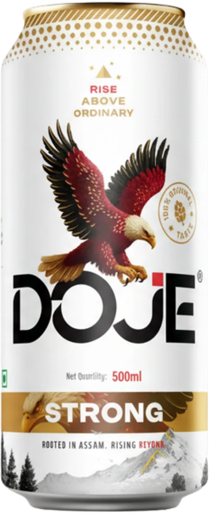
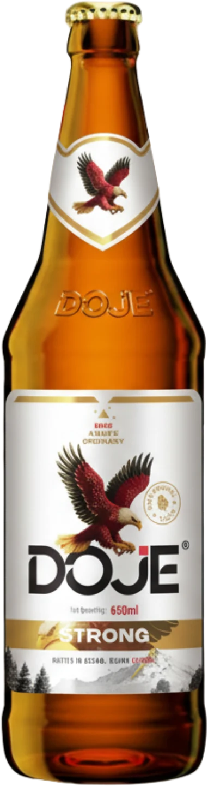

Our Story
Born from a vision to craft more than just beer, DOJE represents bold character, refined brewing, and moments worth celebrating.
Sunit Breweries
Estd. 2022

Our Story
Born from a vision to craft more than just beer, DOJE represents bold character, refined brewing, and moments worth celebrating.
Every bottle reflects careful brewing, premium ingredients, and uncompromising attention to detail.
Bold, balanced, and remarkably smooth — crafted for those who expect more.
Consistent brewing standards ensure every pour delivers the same refined experience.
DOJE is made for moments that deserve something extraordinary.

Premium malt, quality hops, pure water, and carefully selected yeast create the foundation of every DOJE brew.
Every batch is brewed under carefully controlled temperatures to unlock balanced flavour and aroma.
Time allows the flavours to mature naturally, creating a smooth finish with depth and character.
Every batch undergoes rigorous quality checks to ensure consistency from the first bottle to the last.
Chilled, poured, and shared — the final step is creating moments worth remembering.

DOJE is proudly crafted by Sunit Breweries, where every brew begins with a simple belief: exceptional beer is never an accident. From sourcing quality ingredients to maintaining rigorous brewing standards, every step is guided by precision, patience, and an unwavering commitment to excellence. The result is a beer that is bold in character, refined in taste, and made for moments worth celebrating.
About Sunit Breweries